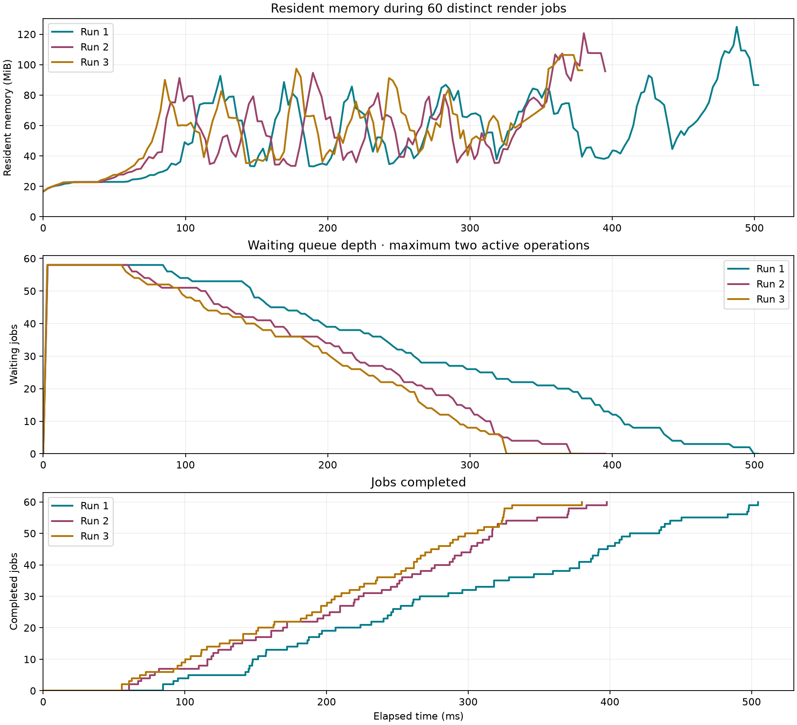

60-render queue · three-run profile
Long queue: three independent runs
- All three independent runs completed 60 jobs successfully; observed maximum concurrency was two and maximum waiting depth was 58.
- Median completion time: 397.85 ms; range 380.36–504.76 ms.
- Whole-process peak RSS: 106.6–124.9 MiB. It is a high-water mark, not decoded-image or retained-cache size.
- After clearing encoded memory and waiting 250 ms, resident size was 57.6–59.6 MiB. Framework, allocator, source snapshots, and test-runner resources can remain; this does not establish a leak.
| Run | Jobs | Elapsed ms | Jobs/sec | Max active | Max waiting | Baseline MiB | Peak RSS MiB | End RSS MiB | After clear MiB | Encoded cache MiB |
|---|---|---|---|---|---|---|---|---|---|---|
| 1 | 60 | 504.76 | 118.9 | 2 | 58 | 16.67 | 124.86 | 69.16 | 59.56 | 2.89 |
| 2 | 60 | 397.85 | 150.8 | 2 | 58 | 16.61 | 121.05 | 78.17 | 57.58 | 2.89 |
| 3 | 60 | 380.36 | 157.7 | 2 | 58 | 16.55 | 106.61 | 78.88 | 58.28 | 2.89 |
MiB = 1,048,576 bytes. Encoded cache includes source and derived PNG bytes; decoded images are not retained.

Workload
Three sequential fresh release-test processes, using the existing Apple M3 Pro environment. Each process prefetches eight encoded sources outside the timed interval: six standard NHL logos, the Colorado wire SVG, and the jersey PNG. Every SVG is requested at eight widths (32/48/64/96/128/160/256/390 points), at 3× scale and natural aspect ratio: 56 unique SVG variants. The texture adds four requests at 16/32/64/128 points and 3×: 60 distinct source/target jobs in total. All jobs are submitted together to the default two-slot FIFO render queue with Lanczos enabled. Identical jobs are not repeated, so request coalescing cannot turn the backlog into a single render. Source data is ready, derived PNGs start empty, and the cache is memory-only with its default 32 MiB limit. Texture output never exceeds native dimensions. Returned decoded images are discarded by preRender; this models cache preparation, not 60 simultaneously retained visible images. Source snapshots remain alive throughout the measurement. No network traffic, source prefetch, or post-run 250 ms settling delay is included in completion time.
Interpreting the memory results
Resident size and queue occupancy are sampled approximately every 2 ms from a separate task. Scheduling can delay samples and miss brief peaks; the peak-RSS table uses getrusage independently. The two-active limit is also checked in every captured queue sample, and the test verifies the final queue is empty and all jobs complete. Completion times include queue wait; they are not individual CPU times. Three runs show process-launch and scheduling variation, not a statistical guarantee or a leak trend. Fresh processes do not flush operating-system or GPU-driver caches. The earlier ~309 MiB tight low-level multi-size benchmark is a different workload and lifetime pattern: this experiment measures the public queued pipeline with discarded decoded results, not that tight rendering loop. No rendering or memory-management implementation was changed for this experiment.
The two-operation cap successfully bounds active work even with a 58-job backlog. For this measured workload, retaining encoded outputs is much smaller than whole-process peak RSS. Keep the current concurrency cap; prioritize visible work before filling this queue speculatively. A leak/retention investigation would require repeated batches inside one long-lived process plus allocation tracing, rather than comparing these three independent process peaks.
Scripts/profile-long-queue.sh
Vector charts · CSV · Run 1 raw samples · Run 2 raw samples · Run 3 raw samples